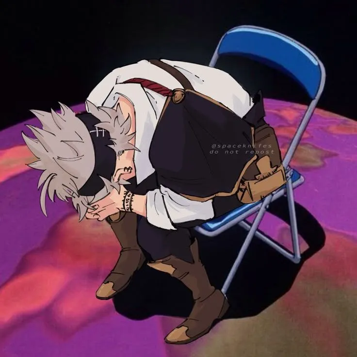

Game Console Manager
A console-style program for checking, installing and uninstalling games.
CV & Portfolio
I will never lose because not giving up is my magic.
Profile
I am a first-year Computer Science student at UVT, interested in web development, programming and game-related projects.
I like learning by building practical projects and improving them step by step.
University: West University of Timișoara
Faculty: Faculty of Mathematics and Computer Science
Specialization: Computer Science
Email: david.minciuna06@e-uvt.ro
GitHub: github.com/DavidMinciuna

Me while working on faculty projects
Skills
Education
Portfolio
A console-style program for checking, installing and uninstalling games.
A multi-page website created with HTML, CSS and JavaScript.
Python project about sorting algorithms, experimental tests and written documentation.
NOT FINISHED!